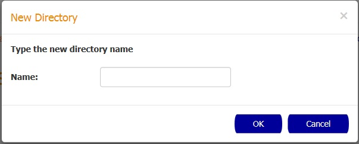

How to download a saved search
In order to download a saved search you need to select the checkbox of the search you want to export and
click the Download button.

In the Download popup select the predefined destination folder by selecting a folder name in the Destination folder dropdown, and then confirm the action by pressing the OK button.
You can also create a new folder by selecting the New Directory button and entering the new folder name in the New Directory popup.

How to delete a set of saved searches
In order to delete a set of saved searches you need to select the checkboxes of the searches you want to delete and
click the Delete button.
After this, the Delete Saved Search popup is going to appear with a warning message and the name of the searches that were selected to be deleted. Click the OK button to confirm the action
How to load a saved search
In order to load a saved search you need to click the desired search in the table. After the click, the Search page is going to be displayed with the fields populated.